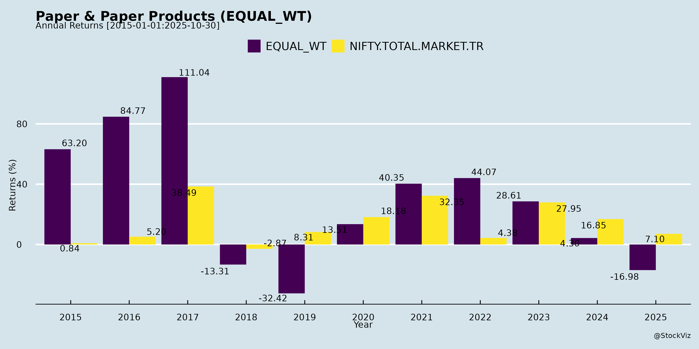
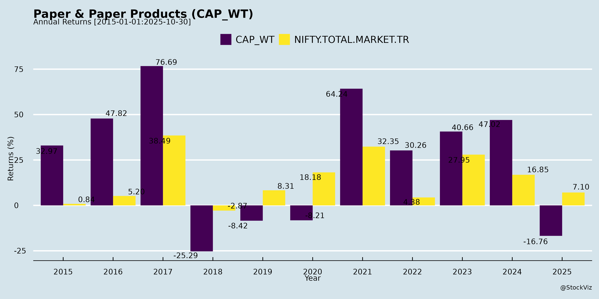
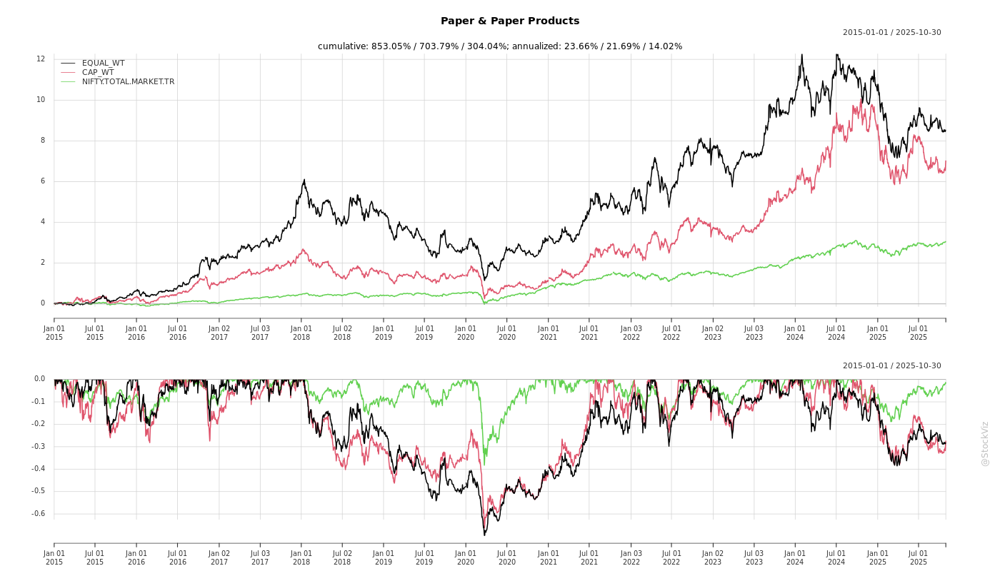
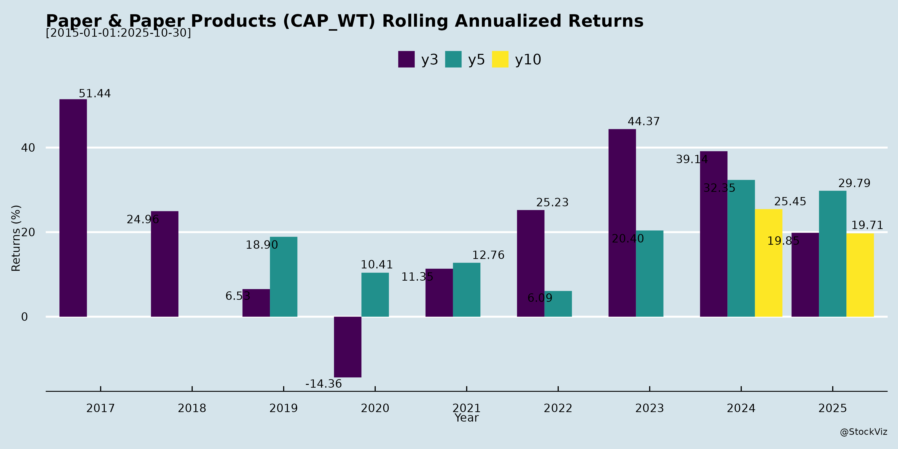

Paper & Paper Products
Industry Metrics
February 20, 2026
Annual Returns


Cumulative Returns and Drawdowns

SMA Scenarios

Current Distance from SMA
Rolling Returns

Market Cap
EBIT (% of Industry Total)
Revenue (% of Industry Total)
AI Summaries
Analyst
asof: 2025-12-03
Summary Analysis: Indian Paper & Paper Products Sector
Using the provided documents (earnings call transcripts and disclosures from Kuantum Papers, Satia Industries, TNPL, Pakka, and Aditya Birla Real Estate—though the latter is less relevant as it focuses on real estate post-rebranding from Century Textiles), the analysis highlights sector dynamics based on Q2/H1 FY26 (Kuantum) and Q4 FY25 (Satia) insights. The sector faces import-driven pressures but shows resilience through expansions and demand tailwinds. TNPL and Pakka provide limited operational details (analyst meets/calls without transcripts), reinforcing stable investor engagement amid challenges.
Headwinds
- Cheap Imports and Pricing Pressure: Persistent influx of low-priced paper from ASEAN/China (e.g., 7-8% YoY volume increase to ~1M tons in Q1 FY26 per Kuantum). Affects realizations (down ₹3,200/ton QoQ); Satia notes 14-15% YoY realization drop due to ASEAN dumping. Imports in notebooks/W&P segments intensified post-GST changes.
- Input Cost Inflation: Elevated wood/agro pulp costs (e.g., floods in Punjab raised Kuantum’s production costs by ₹1,300/ton); reliance on 50-50 agro-wood mix vulnerable to shortages/pricing. Satia maintains stable RM via diversification (veneer waste, bamboo) but notes MDF competition.
- GST Inverted Duty Structure: Paper/board tax up to 18% (from 12%), while notebooks nil-rated and converted products at 5%. Leads to ITC blockage, higher WC needs, and vulnerability to tax-free imports (industry lobbying for correction at next GST Council).
- Margin Compression: EBITDA margins declined (Kuantum: 12.3% in Q2 vs. prior; Satia: down 35% YoY to 7-8%). PAT margins at 2-3.5% (Kuantum H1).
- External Factors: Subdued China demand spilling over; seasonal Q1/Q2 weakness.
Tailwinds
- Stable/Improving Volumes: Kuantum up 3.5% YoY in Q2 post-PM4 upgrade (record 8,303 MT/month); Satia volumes marginally up despite realizations hit, with 90%+ utilization and 1-month order book (50-50 govt/private).
- Cost Efficiencies: Satia saves ₹70cr via rice straw (85-90% fuel mix, cheaper wheat straw at ₹400-500/ton less); Kuantum targeting 7-8% COP reduction (₹50-55k/ton currently) via DDS pulp upgrade, AI (Project Nirman), and water filtration.
- Policy/Demand Support: New Education Policy boosting W&P demand (Satia: robust from syllabus changes, govt printing); seasonal Q3/Q4 pricing uptick (10-15% in Apr-May per Satia).
- Sustainability Edge: Kuantum’s EUDR/FSC compliance, 18L clonal saplings distributed; Satia’s rice straw boiler cuts fuel costs 30-35%.
- Tax Benefits: Satia avails Sec 80IA (cogeneration) deduction (~17-18% MAT rate, continues 6 years).
Growth Prospects
- Capacity Expansions: | Company | Current Capacity | Target | Capex/Details | Expected Impact | |—————|——————|——–|——————————–|———————————-| | Kuantum | 450 tpd | 650 tpd | ₹735cr (PM1-4 upgrades, pulp) | 30-40% vol growth FY27; EBITDA 18-20%; specialty to 28-30% mix (₹2.5-3k/ton premium). | | Satia | ~219kt FY25 | 240-260kt | ₹225cr (PM3: +20-50kt, speed +50%); ₹new boiler FY28 | 10-15% vol growth FY27+; high-end W&P/copier to 50% mix (5-10% realization premium). |
- Product Mix Shift: Move to specialty/Maplitho/copier (Kuantum: Kappa Premium 3; Satia: chromo/artboard potential at ₹90-100k/ton). Export 12-15% (Kuantum).
- Revenue/EBITDA Outlook: Kuantum FY26: >15% EBITDA; Satia FY26 revenue ₹1,200-1,300cr (down 15% due to PM3 shutdown Jul-Dec). FY27: 40-50% vol growth (Kuantum).
- Market Demand: 5-6% CAGR; import substitution via upgrades; govt literacy push (Sarva Shiksha Abhiyan).
- Other: Cutlery (Satia: ₹15-20cr rev potential, 14 machines); tissue/specialty exploration (Kuantum).
Key Risks
- Import Safeguards Delay: No MIP/BIS yet for W&P (under govt consideration); continued dumping could cap realizations/growth.
- Execution Delays: Shutdowns (Satia PM3: 6 months, -₹400-500cr revenue FY26); capex overruns (Kuantum peak debt ₹600-650cr at 8.5-9% cost).
- RM Volatility: Wood/agro shortages (floods); 50-55% in-house pulp limits (Satia/Kuantum).
- Policy/Regulatory: GST reversal uncertain; EUDR compliance costs.
- Demand/Market: Private segment shift risky if govt demand slows; China spillover.
- Financial: Debt rise (Satia: ₹150cr term loan); EBITDA volatility (seasonal, imports).
- Competition: Peers like JK/Satia/Kuantum in Punjab/North; MDF poaching wood resources.
Overall Outlook: Short-term headwinds from imports/GST dominate (margins 12-15%), but expansions and demand tailwinds position sector for 10-40% vol growth by FY27 (EBITDA 15-20%). Monitor GST Council/MIP for inflection. Sector resilient via cost controls and upgrades, but import protection critical.
General
asof: 2025-12-03
Summary Analysis: Indian Paper & Paper Products Sector
Based on the provided announcements from key listed players (e.g., JK Paper, West Coast Paper Mills, Seshasayee Paper, Andhra Paper, TNPL, Pudumjee Paper Products, Kuantum Papers, Satia Industries, Emami Paper Mills, Pakka Limited, and others), the sector exhibits a mix of operational resilience, strategic expansions, and pockets of distress. The documents highlight consolidation efforts, capacity upgrades, and government support amid challenges like cost pressures and non-viable units. Below is a structured analysis of headwinds, tailwinds, growth prospects, and key risks.
Headwinds (Challenges Pressuring the Sector)
- Operational Non-Viability and Closures: Aditya Birla Real Estate’s JV (Birla Advanced Knits Pvt Ltd) ceased operations due to “economic disadvantages and huge operational costs” in knit fabric business, selling assets for ₹54.11 Cr (vs. ₹114 Cr equity investment written off). Signals broader cost inflation (power, fuel, chemicals) impacting margins, as echoed in Kuantum Papers’ Q1 FY26 note on shutdown impacts.
- Revenue Volatility: Kuantum Papers reported Q1 FY26 revenue at ₹222.92 Cr (down from FY25 full-year ₹277.35 Cr equivalent pace), partly due to planned shutdowns; highlights cyclical demand and maintenance disruptions.
- Compliance and Administrative Burdens: Routine issues like KYC non-compliance (Pudumjee withholding dividends), director cessations (TNPL, Satia, Emami), and auditor changes (TNPL) indicate governance housekeeping, diverting focus from core ops.
- Debt and Pledge Pressures: N R Agarwal Industries converted promoter share pledges to non-disposal undertakings amid term loan restructurings, pointing to leverage strains.
Tailwinds (Supportive Factors)
- M&A and Consolidation: JK Paper’s secured creditors (including NCD holders) unanimously (100%, ₹1,514 Cr votes) approved a composite scheme amalgamating multiple packaging firms (e.g., JKPL Utility, Securipax) and demerging agro units. Enhances scale in packaging, a high-growth sub-segment.
- Capacity Upgrades and Efficiency Gains: Kuantum recommissioned an upgraded production line post-shutdown, boosting long-term output. Seshasayee secured environmental clearance for 20% pulp/paper capacity hike (MDP-IV Phase-I).
- Government Incentives: Pakka’s “Jagriti Project” got Evaluation Committee nod for ₹224.47 Cr fiscal incentives under UP’s 2022 policy (15-year payout post-commercial ops), aiding capex.
- Related Party Stability: West Coast disclosed routine RPTs (e.g., rents, remuneration totaling ₹1,559 Cr half-yearly), approved by committees, ensuring smooth promoter/group support.
Growth Prospects (Opportunities Ahead)
- Expansion and Modernization: Clear pipeline includes Seshasayee’s 20% capex, Kuantum’s line upgrade, and Pakka’s Jagriti (investment-focused incentives). Emami’s OCRPS redemption (₹28.8 Cr) frees up capital for core paper ops.
- Packaging and Value-Added Shift: JK Paper’s mergers bolster packaging portfolio (e.g., Utility Packaging, Horizon Packs), aligning with rising e-commerce/FMCG demand. Sector benefits from eco-friendly paper push (e.g., TNPL’s bagasse-based).
- Policy-Driven Incentives: UP policy success for Pakka could cascade; environmental clearances (Seshasayee) ease green expansions amid sustainability mandates.
- Profitability Resilience: Kuantum’s Q1 net profit at ₹12.06 Cr (EPS ₹1.38) despite revenue dip, driven by cost controls (e.g., inventory changes), suggests margin levers for FY26 growth.
Key Risks (Potential Threats)
| Risk Category | Description | Examples from Docs |
|---|---|---|
| Operational/Cost Risks | High input costs (power/fuel/chemicals) and shutdowns could erode margins; non-viable units risk asset write-offs. | Birla Knits closure; Kuantum shutdown impact. |
| Regulatory/Approval Risks | Delays in clearances, incentives, or NCLT sanctions; KYC/dividend withholding hits investor sentiment. | Pakka’s Cabinet approval pending; Pudumjee’s IEPF warnings. |
| Debt & Financial Risks | Pledge conversions signal liquidity crunches; preference redemptions strain cash flows. | N R Agarwal pledges; Emami ₹28.8 Cr payout. |
| Governance/Talent Risks | Frequent director/KMP changes disrupt continuity; auditor rotations add scrutiny. | TNPL/Satia/Emami resignations; committee reconstitutions (Andhra, Satia, Emami). |
| Market/Cyclical Risks | Demand softness (e.g., Kuantum Q1 dip) amid economic slowdowns; over-reliance on promoters (RPTs). | West Coast’s promoter rents/remuneration dominance. |
Overall Outlook: Moderately positive with tailwinds from consolidation (JK Paper) and expansions (Seshasayee, Pakka, Kuantum) outweighing headwinds like closures. Growth hinges on capex execution and cost discipline, but risks from costs/debt warrant monitoring. Sector poised for 10-15% capacity growth via projects, supported by packaging demand and policies. Investors should track Q2 FY26 results for capex progress.
(This analysis is derived solely from the provided documents; broader market data not considered.)
Investor
asof: 2025-11-30
Analysis of Indian Paper & Paper Products Sector
Based on the provided documents (investor presentations, earnings call transcripts, and announcements from Andhra Paper Limited, Kuantum Papers Ltd., Satia Industries Ltd., Tamil Nadu Newsprint & Papers Ltd., and Pakka Ltd.), the Indian paper sector faces a mix of short-term pressures and long-term opportunities. The analysis below categorizes headwinds, tailwinds, growth prospects, and key risks, drawing directly from industry trends, company updates, and management commentary (e.g., Q2/H1 FY26 results, capex plans, and market outlooks).
Headwinds (Challenges)
- Cheap Imports Surge: Flood of low-priced paper from ASEAN/China (7-8% YoY volume increase, ~1M+ MT), eroding realizations by ₹3,200-₹3,500/MT despite steady demand. Impacts writing/printing (W&P) and notebook segments (Kuantum, Satia).
- Input Cost Pressures: Elevated wood/agro residue prices (e.g., floods in Punjab raised costs by ₹1,300/MT); raw material mix (50-55% wood pulp) vulnerable (Kuantum, Satia).
- GST/Policy Anomalies: Hike to 18% on paper (from 12%), nil-rating on notebooks creating inverted duty structure, blocking ITC and raising working capital needs (Kuantum).
- Margin Compression: EBITDA margins fell to 11-15% (from 27-31% YoY) due to lower NSR and higher costs; PAT margins at 3-7% (Andhra, Kuantum, Satia).
- Shutdowns/Capex Disruptions: Planned outages (e.g., Satia PM3 for 6 months) to reduce FY26 volumes by 10-15%.
Tailwinds (Positives)
- Operational Efficiencies: Successful machine upgrades (e.g., Kuantum PM4 hit 360 TPD peak; Andhra pulp/recovery boosts); shift to biofuels/rice straw (85-90% usage) saving 30-35% on power/fuel (Satia).
- Sustainability Edge: Farm forestry (Andhra: 717k acres, 2B saplings); EUDR/FSC compliance; ECF processes and CO2 capture (Andhra, Kuantum).
- Strong Domestic Network: Pan-India dealer base (53+ dealers, 75% loyal >15 yrs; Andhra); 90%+ utilization despite imports (Satia).
- Policy Advocacy: Industry pushing for MIP, BIS certification, anti-dumping; early GST Council revisit expected (Kuantum).
- Healthy Balance Sheets: Debt reduction (Satia repaid ₹134 Cr); low WC (Kuantum: ₹50-80 Cr); dividends declared (Satia 20%).
Growth Prospects
- Demand Tailwinds: 5-7% CAGR to FY25 (21-22.5M MT domestic demand); paperboard 6-8%, specialty/tissue 11-12%; driven by education policy, e-commerce/FMCG/pharma, plastic bans (Andhra).
- Capacity/Volume Expansion: Andhra (255k TPA paper + tissue/greenfield); Kuantum (450→650 TPD, 30-50% FY27 growth); Satia (PM3 +20k TPA, total 240-260k MT); overall 10-40% volume upside.
- Value-Added Shift: Specialty papers to 28-50% mix (₹2.5-10% higher realizations); copier/maplitho/chromo/cutlery/tissue (Kuantum, Satia, Andhra).
- EBITDA Margin Recovery: 18-20% targeted FY27 via efficiencies/yields (7-10% cost cuts from new boilers/DDS); ₹520-735 Cr capex (ROI 3-4 yrs).
- Exports/Diversification: 8-15% export share; new grades replacing imports (Andhra: 11 countries; Kuantum EUDR orders).
Key Risks
| Risk Category | Description | Mitigation (from Docs) |
|---|---|---|
| Import Competition | Escalating volumes without MIP/BIS/safeguards; China oversupply. | Industry lobbying; focus on specialty/domestic demand. |
| Raw Material Volatility | Wood/pulp/agro price spikes (50% mix); water/forestry regs (EUDR). | Farm forestry; multi-fiber sourcing; clonal saplings. |
| Policy/Regulatory | GST inversion persists; delays in safeguards; tax changes (e.g., 80IA deduction ends FY31). | Advocacy; internal efficiencies. |
| Execution | Capex delays/shutdowns (e.g., floods/wars delayed Kuantum); debt peak ₹600-650 Cr at 8.5-9%. | Phased upgrades; term loans secured. |
| Demand/Macro | Slowdown in education/office segments; monsoon/flood impacts. | Diversification to packaging/tissue; 95% OTIF service. |
Summary
The Indian paper sector is navigating short-term headwinds from imports (eroding 14-15% realizations) and costs, squeezing margins to 11-15% amid GST disruptions. However, tailwinds from upgrades, sustainability, and networks provide resilience, with strong growth prospects (5-12% CAGR, 10-50% volume upside FY26-27) via specialty shifts and capex (e.g., tissue/paperboard). Key risks center on imports/policy, but companies like Andhra/Kuantum/Satia are positioning for 18-20% EBITDA via efficiencies. Outlook: Cautious FY26 (volumes flat/down 10% due to shutdowns) but bullish FY27+ if safeguards materialize; sector self-sufficiency emphasized (domestic production meets demand). Investors should monitor GST Council/MIP updates and Q3 pricing trends.
Press Release
asof: 2025-12-01
Indian Paper & Paper Products Sector Analysis
Based on Q1/Q2 FY26 and FY25 disclosures from key players (JK Paper, West Coast Paper Mills, TNPL, Pudumjee Paper Products, Satia Industries). The sector faces cyclical pressures but shows pockets of resilience via diversification and cost management. Overall, revenue growth is muted (down 8-16% YoY across most), EBITDA margins compressed (2-20%), and profitability volatile (some QoQ gains, but sharp YoY declines).
Headwinds (Primary Challenges)
- Import Pressure: Overwhelming cheap imports from China/ASEAN (e.g., paper/paperboard imports at record highs). Cited by all companies (JK, West Coast, TNPL, Satia) as key cause of depressed realizations (down 2-9% YoY) and pricing wars. Satia notes “intensified pricing pressure” and “subdued demand”.
- Elevated Input Costs: High wood prices (ongoing due to low Covid-era plantations, demand from other industries) and hardwood pulp hikes (20-25% YoY per TNPL). Fuel/power costs also up, compressing gross margins (e.g., Satia: 52% → 45%).
- Demand Softness & Realization Decline: Lower offtake and sales volumes in writing/printing segments; packaging somewhat resilient but affected. Revenue down 8-16% YoY/H1 (Pudumjee, Satia).
- Regulatory/Policy Issues: Inverted GST duty structure (Satia) raises working capital needs; delays in environment clearances/boiler approvals (Pudumjee).
- Financial Strain: PAT volatility (Satia Q2 loss of ₹245 Mn; TNPL FY25 PAT down 98% to ₹3.7 Cr).
Tailwinds (Supportive Factors)
- Cost Efficiencies & Mix Optimization: QoQ EBITDA/PAT gains despite revenue dips (West Coast: EBITDA +24%, PAT +31%; JK PAT +7%). Focus on operational excellence, product mix (value-added/specialty papers), and farm forestry (JK planted 3 Cr saplings).
- Backward Integration: Self-sufficiency in power/pulping (Satia, West Coast) and raw material plantations (Satia: 550 acres eucalyptus).
- Sustainability Edge: Emphasis on eco-friendly papers (bagasse-based TNPL, biodegradable Pudumjee), FSC/ISO certifications across players.
- CSR & Awards: Strong community engagement (JK: 860 villages) aids raw material security via social forestry.
Growth Prospects
- Packaging Boom: Fastest-growing segment (JK acquiring Borkar Packaging for ₹393 Cr revenue; strengthens corrugated/folding cartons leadership). Demand from FMCG/pharma/hygiene.
- Capacity Expansions & Launches: New projects (Pudumjee: 15 MW solar, Mahad mill; Satia PM3 redevelopment deferred but planned). Specialty focus (barrier papers for food/pharma).
- Diversification: Into renewables (Pudumjee solar), JVs/land banks. Long-term: Premium/luxury housing analogy from Birla, but sector aims for top micro-markets (urban living redefinition).
- Recovery Catalysts: Easing wood prices/fuel costs (Satia optimistic for H2); govt. interventions sought on imports/GST. CAGR potential: 77% cited in one (Birla, but aspirational for sector).
- Outlook: Phased recovery in H2 FY26 via demand rebound, import curbs, and efficiencies. Top players target top-3 positions in niches.
Key Risks
| Risk Category | Details | Impact |
|---|---|---|
| Market/Competition | Sustained imports (SE Asia/China); price volatility. | High: Erodes 10-20% realizations (Satia/TNPL). |
| Raw Material | Wood/pulp supply disruptions, price hikes (20-25%). | High: 40-50% of costs; farm forestry mitigates partially. |
| Regulatory | Import duties/GST inversion; clearances delays. | Medium: Working capital strain, capex delays (Pudumjee). |
| Operational | Volume/demand dips; execution risks in expansions. | Medium: EBITDA margins 2-20% (volatile). |
| Macro | Economic slowdown affecting printing/packaging end-use. | Medium: Soft FY25 carryover into FY26. |
| Financial | Debt (TNPL borrowings down but high); forex (imports). | Low-Medium: EBITDA covers interest, but losses possible. |
Summary Verdict: Cautious Outlook. Sector under import/import-cost squeeze (headwinds dominate), but tailwinds from packaging/diversification offer 10-15% medium-term growth if govt. acts on safeguards. Monitor Q3 FY26 for import trends/wood prices. Resilient players (JK, West Coast) via acquisitions/efficiencies likely outperform. Recommendation: Selective buy on dips for packaging-focused names.
Copyright © 2023 SAS Data Analytics Pvt. Ltd. All rights reserved.